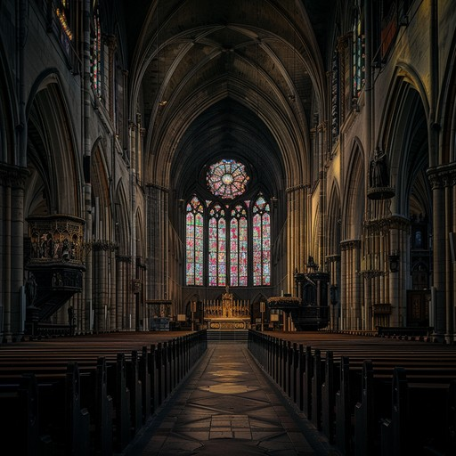
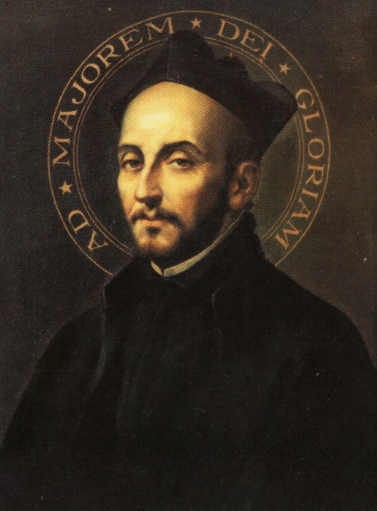

Jak to wygląda?
Jak przebiegają Ćwiczenia Duchowe?
Struktura Ćwiczeń Duchowych opiera się na planie dnia przedstawionym na początku rekolekcji przez kapłana prowadzącego. Harmonogram jest zawsze dostępny dla wszystkich uczestników i może nieco się różnić w zależności od charakteru rekolekcji oraz osoby prowadzącej. Niezależnie jednak od szczegółowego układu dnia, Ćwiczenia Duchowe mają kilka stałych i istotnych elementów, które pomagają wejść w głębokie spotkanie z Bogiem i owocnie przeżyć czas rekolekcji.




Punkty do modlitwy
Jednym z najważniejszych elementów dnia są tzw. punkty. Są to krótkie konferencje, zwykle trwające około trzydziestu minut, podczas których kapłan prowadzący przedstawia treść medytacji lub kontemplacji przewidzianych w Księdze Ćwiczeń Duchowych św. Ignacego Loyoli.
Kapłan wiernie wprowadza uczestników w historię kontemplacji albo w temat medytacji proponowany przez św. Ignacego. Celem tych konferencji jest przygotowanie rekolektanta do osobistej modlitwy. Następnie, podczas medytacji, każdy może sam rozważać otrzymane treści przed Bogiem, zatrzymać się nad nimi i pozwolić, aby prowadziły go do głębszego poznania prawdy.
Jak pisze św. Ignacy w Ćwiczeniach Duchowych, chodzi o to, aby rekolektant mógł „rozważać i zastanawiać się sam nad sobą”, odkrywając prawdy zarówno przez własne rozumowanie, jak i przez światło rozumu oświeconego Bożą łaską (por. Ćwiczenia Duchowe, nr 2).
Sakramenty
Podczas Ćwiczeń Duchowych rekolektanci mają codzienny dostęp do sakramentów.
Każdego dnia sprawowana jest Msza Święta przeznaczona dla uczestników rekolekcji. Eucharystia stanowi centrum dnia i szczególne miejsce spotkania z Chrystusem obecnym w Ofierze Krzyża. To właśnie przez tajemnicę Eucharystii wiele treści rozważanych podczas modlitwy staje się głębiej zrozumiałych i bardziej żywych dla serca.
W planie rekolekcji przewidziany jest również konkretny czas na sakrament pokuty i pojednania. Spowiedź staje się wówczas szczególnym momentem odnowienia pragnienia nawrócenia i otwarcia się na łaskę Boga. Jednocześnie uczestnik może w każdej chwili poprosić kapłana o spowiedź również poza wyznaczonym czasem — prowadzący pozostaje dostępny przez cały czas rekolekcji.
Adoracja Najświętszego Sakramentu
Każdego dnia jedna z medytacji odbywa się w kaplicy podczas adoracji Najświętszego Sakramentu.
Jest to szczególny czas trwania przed Chrystusem prawdziwie obecnym w Eucharystii. Cisza adoracji pozwala jeszcze głębiej wejść w modlitwę i powierzyć Panu wszystko, co porusza się w sercu. Przed Najświętszym Sakramentem łatwiej zatrzymać się, wsłuchać i pozwolić Bogu działać w duszy z większą prostotą i pokojem.
Adoracja jest czasem szczególnej łaski — czasem spojrzenia na Jezusa i pozwolenia, aby On spojrzał na nas.
Kierownictwo duchowe
W czasie Ćwiczeń Duchowych każdy uczestnik może zwrócić się do kapłana prowadzącego z prośbą o rozmowę, radę lub kierownictwo duchowe.
Takie rozmowy są bardzo ważną częścią rekolekcji. Ćwiczenia Duchowe są czasem zewnętrznego milczenia, ale jednocześnie bardzo intensywnego działania Bożej łaski w duszy. Pojawiają się różne pytania, poruszenia serca, światła, trudności czy decyzje.
Kapłan pomaga wtedy spokojnie spojrzeć na to wszystko, rozeznawać wewnętrzne poruszenia i lepiej rozumieć drogę, którą Bóg prowadzi duszę.
Milczenie
Jedną z najbardziej charakterystycznych cech Ćwiczeń Duchowych jest milczenie.
Żyjemy w świecie pełnym hałasu, pośpiechu i nieustannego napięcia. Współczesny rytm życia często nie pozwala człowiekowi zatrzymać się i wsłuchać w to, co dzieje się w jego sercu. Łatwo wtedy zagubić wewnętrzny pokój i stracić z oczu to, co najważniejsze.
Dlatego podczas rekolekcji uczestnicy zachowują milczenie zewnętrzne i starają się również wejść w milczenie wewnętrzne. Nie chodzi jedynie o brak rozmów, lecz o stworzenie przestrzeni, w której serce może wyciszyć się przed Bogiem.
W ciszy człowiek zaczyna wyraźniej słyszeć głos Ducha Świętego, rozpoznawać Jego natchnienia i odnajdywać pokój, którego świat nie może dać.
Właśnie dlatego czas Ćwiczeń Duchowych staje się dla wielu osób momentem głębokiej łaski, duchowego odnowienia i prawdziwego spotkania z Bogiem.